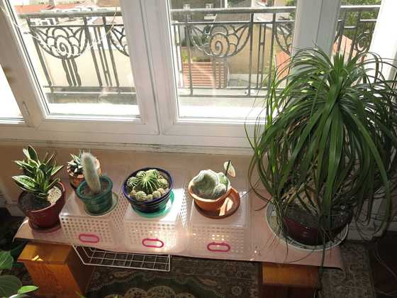
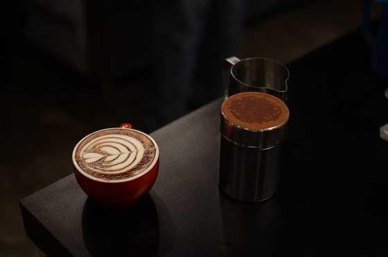
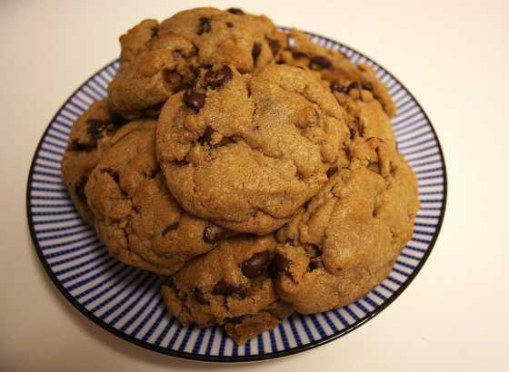
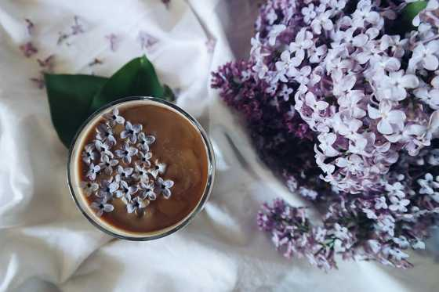

CAFE MINORI
登米のお米と野菜の「実り」を、ゆっくり味わう一杯と一皿を。
お店について
CAFE MINORIは、宮城県登米市中田町石森町にあるカフェです。登米市の地産地消推進店として紹介されており、登米市の農家さんが育てたお米や野菜を使ったメニューを出しています。
お店の名前の由来は確認できていません。制作側のイメージとして、「みのり(実り)」という響きから、田んぼの多い登米の恵みを思い浮かべ、稲穂のような黄金色と若葉色でページをまとめました。



メニュー





口コミ(イメージ例)
イメージ例
お米のおいしさがしっかり伝わる、やさしい味のおにぎりでした。
イメージ例
月替わりのパスタを楽しみに通っています。窓辺の席が落ち着きます。
イメージ例
散策の途中に立ち寄って、のんびりコーヒーを飲みました。
※上記は制作側が作成したイメージ例であり、実在のお客様の声ではありません。

アクセス
〒987-0601 宮城県登米市中田町石森町120-1
電話: 準備中 / 営業時間・定休日: 準備中


掲載写真はフリー素材のイメージ写真で、店舗の実際の様子・料理ではありません。
写真クレジット
- images/mug.jpg「Bright turquoise mug sits on a wooden table by the window」 作者: Shixart1985 / CC BY 2.0(縮小・切り抜き加工あり)
- images/espresso.jpg「Espresso Coffee 01」 作者: Jubair1985 / CC0 1.0(縮小・切り抜き加工あり)
- images/wood.jpg「Weatherworn top of wooden table」 作者: W.carter / CC0 1.0(縮小・切り抜き加工あり)
- images/gray.jpg「Gray espresso cup with amaretto」 作者: Friedrich Haag / CC BY-SA 4.0(縮小・切り抜き加工あり)
- images/beans.jpg「Coffee Beans macro 1」 作者: Daniel Schwen / CC BY 3.0(縮小・切り抜き加工あり)
- images/chair.jpg「Backrest 01」 作者: Jeuwre / CC BY-SA 4.0(縮小・切り抜き加工あり)
- images/teapot.jpg「Porcelain teapot on windowsill (Unsplash)」 作者: Nathan Fertig / CC0 1.0(縮小・切り抜き加工あり)
- images/redmug.jpg「Delicious coffee and pastries on a wooden table in a cozy cafe setting」 作者: Shixart1985 / CC BY 2.0(縮小・切り抜き加工あり)
- images/plants.jpg「Shelf at the bottom of a window for growing houseplants」 作者: Tangopaso / パブリックドメイン(縮小・切り抜き加工あり)
- images/latte.jpg「Coffee with cream and sugar (Unsplash)」 作者: karl chor / CC0 1.0(縮小・切り抜き加工あり)
- images/cookies.jpg「Plate of cookies」 作者: Sarah Fleming / CC BY 2.0(縮小・切り抜き加工あり)
- images/rain.jpg「Raindrops on the glass」 作者: BogTar201213 / CC BY-SA 4.0(縮小・切り抜き加工あり)
- images/lilac.jpg「Top view of floral coffee (Unsplash)」 作者: Brigitte Tohm / CC0 1.0(縮小・切り抜き加工あり)
- images/whitemug.jpg「A white mug filled with warm coffee」 作者: Shixart1985 / CC BY 2.0(縮小・切り抜き加工あり)
- images/pasta.jpg「Pasta alla Norma - Wiki Loves Sicilia」 作者: 8w9d / CC0 1.0(縮小・切り抜き加工あり)